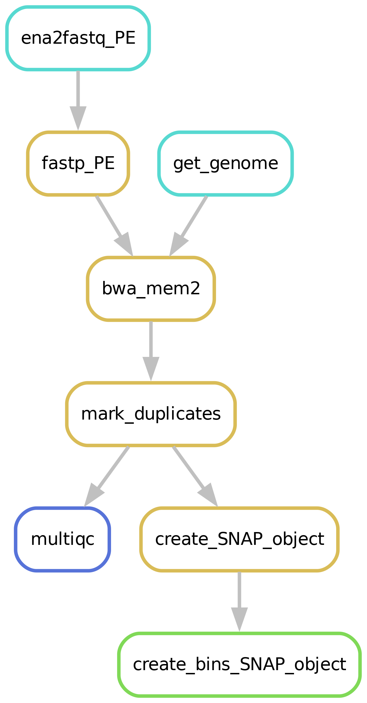

scATAC-seq¶
Running a scATAC-seq pipeline has never been easier!
Does your scATAC protocol generate single cell fastq files? And do they need to be mapped and analysed? Then this pipeline is for your! This pipeline takes single cell fastq files, performs extensive (plate based) QC steps, and generates a binned SNAP-object that can be used for further downstream analysis following this tutorial.
If you have a Cellranger object instead (output 10x), it is relatively easy to directly generate a SNAPobject, look at the documentation on the SnapATAC github instead.
Alternatively, if you have a large FASTQ file containing a cell specific ID in the header, it might be possible to run this pipeline with some alterations.
The ‘merge_replica’ outputs a fastq trimmed fastq file with the cell_id after the @ in the header, e.g. @sampleXcellY:NS500173:518:HTYVTBGXB:4:23609:2756:19401 2:N:0:ACTCGCTA+ATTAGACG.
Pipeline steps¶

Downloading of sample(s)¶
Depending on whether the samples you start seq2science with is your own data, public data, or a mix, the pipeline might start with downloading samples. You control which samples are used in the samples.tsv. Background on public data can be found here.
merge cell fastq files based on processing¶
Single cell fastq files get a barcode id corresponding to the sample name. This is added to the fastq header, after which each single cell fastq is merged to a large FASTQ file with all the technical replica’s (for example all cells from a plate). This results in a multi-QC report containing QC per technical replica’s. This makes lower plate quality easy to spot. Additional single cell QC will be available in downstream analysis of the SNAP-object. See Replicate handling for more information. See Filling out the samples.tsv and config.yaml for more information.
Alignment¶
Make sure to take a look at our alignment workflow.
Generate and bin a SNAP_Object for downstream analysis¶
To find cellular heterogeneity before peak calling, SNAP-ATAC binns the genome. Using this for demensionality reduction of the data and finding cell clusters before peak calling. By default the pipeline includes bins of 5kB, but this is changable in the config.yaml file. After clustering peaks can be called on the aggregated cluster signals. This makes it easier to find peaks present only in a small cluster of cells. This does however mean that the pipeline doesnt perform peakcalling, this is done later in the snapATAC vignette.
Filling out the samples.tsv¶
Before running a workflow you will have to specify which samples you want to run the workflow on. Each workflow starts with a samples.tsv as an example, and you should adapt it to your specific needs. One thing you need to check before filling a sample into your sample.tsv file, is that the fastq file is not completely empty! If a fastq file has a size of 0 it will crash the pipeline. You can run bash code to automatically remove completely empty fastq files from a directory, e.g. run:
cd fastq-dir-here
find . -size 0 -delete
After removing all the completely empty fastq files, use the remainder to fill your samples.tsv file with. As an example, the samples.tsv could look something like this:
sample assembly technical_replicate
GSM1596256 hg38 H1ESC
GSM1596257 hg38 H1ESC
GSM1596258 hg38 H1ESC
GSM1596259 hg38 H1ESC
GSM1596260 hg38 H1ESC
GSM1596261 hg38 H1ESC
GSM1596262 hg38 H1ESC
GSM1596263 hg38 H1ESC
GSM1596351 hg38 GM
GSM1596352 hg38 GM
GSM1596353 hg38 GM
GSM1596354 hg38 GM
GSM1596355 hg38 GM
GSM1596356 hg38 GM
GSM1596357 hg38 GM
GSM1596358 hg38 GM
GSM1596359 hg38 GM
iPSC-2-KC-diff-plate2-16718m701m511 hg38 plate2
iPSC-2-KC-diff-plate2-plate2-16718m701m513 hg38 plate2
iPSC-2-KC-diff-plate2-plate2-16718m701m515 hg38 plate2
iPSC-2-KC-diff-plate2-plate2-16718m701m516 hg38 plate2
iPSC-2-KC-diff-plate2-plate2-16718m701m517 hg38 plate2
Sample column¶
If you use the pipeline on public data this should be the name of the accession (e.g. GSM2837484). Accepted formats start with “GSM”, “SRR”, “SRX”, “DRR”, “DRX”, “ERR” or “ERX”.
If you use the pipeline on local data this should be the basename of the file without the extension(s). For example:
/home/user/myfastqs/sample1.fastq.gz——->sample1for single-ended data/home/user/myfastqs/sample2_R1.fastq.gz┬>sample2for paired-ended data
/home/user/myfastqs/sample2_R2.fastq.gz┘
For local data, some fastq files may have slightly different naming formats.
For instance, Illumina may produce a sample named sample3_S1_L001_R1_001.fastq.gz (and the R2 fastq).
Seq2science will attempt to recognize these files based on the sample name sample3.
For both local and public data, identifiers used to recognize fastq files are the fastq read extensions (R1 and R2 by default) and the fastq suffix (fastq by default).
The directory where seq2science will store (or look for) fastqs is determined by the fastq_dir config option.
In the example above, the fastq_dir should be set to /home/user/myfastqs.
These setting can be changed in the config.yaml.
Assembly column¶
Here you simply add the name of the assembly you want your samples aligned against and the workflow will download it for you.
technical_replicate column¶
Here you put to which technical replica each cell corresponds. E.g. the plate from which the cells were sequenced. Per technical replica QC will be generated. For public data you can put all cells under the same technical replica name.
Filling out the config.yaml¶
Every workflow has many configurable options, and can be set in the config.yaml file. In each config.yaml we highlighted a couple options that we think are relevant for that specific workflow, and set (we think) reasonable default values.
When a workflow starts it prints the complete configuration, and (almost) all these values can be added in the config.yaml and changed to your liking. You can see the complete set of configurable options in the extensive docs.
Best practices¶
Take a look at the postprocessing example.